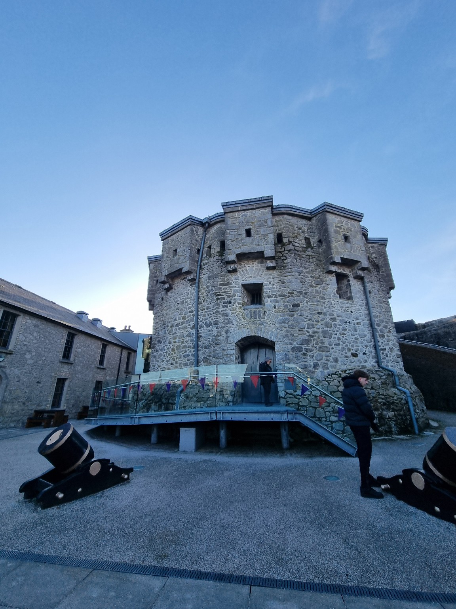
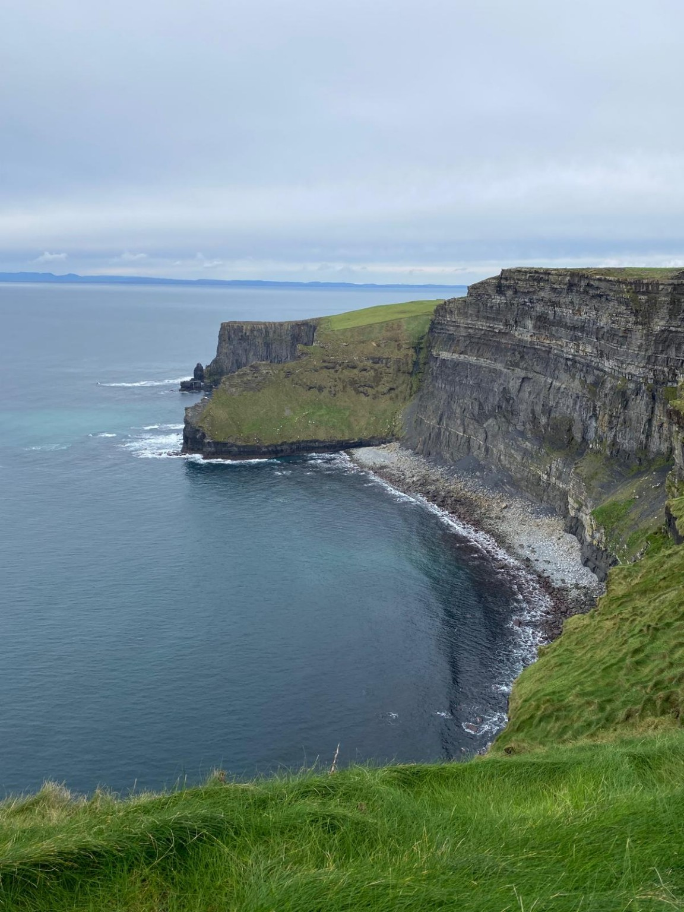

Durante il mio stage linguistico a Galway ho avuto l’opportunità di immergermi nella cultura e nella lingua inglese, vivendo per sei giorni presso una host family. L’esperienza è stata sia educativa che stimolante: abbiamo seguito lezioni per tre giorni dalle 9:00 alle 14:00 (con l’ultimo giorno esteso fino alle 16:00), e nel tempo libero abbiamo esplorato la città e i dintorni.
Una delle maggiori difficoltà è stata la comunicazione, in particolare con la host family, a causa dell'accento irlandese e del mio livello linguistico iniziale. Tuttavia, grazie al mio impegno personale e alle attività ludico-didattiche proposte sia nel centro linguistico che nei laboratori dell’agenzia, sono riuscito a migliorare significativamente la mia capacità di espressione orale.
Uno dei momenti più suggestivi del viaggio è stata la visita al Castello di Athlone, una struttura storica che ci ha permesso di conoscere meglio la storia locale.
Indimenticabile anche l’escursione alle Cliffs of Moher, tra i paesaggi naturali più spettacolari d’Irlanda, dove abbiamo potuto ammirare la costa selvaggia e respirare l’aria dell’oceano.
